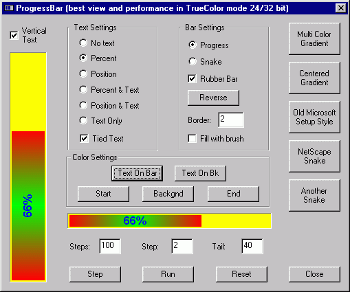

Усовершенствованный ProgressBar v1.1Автор: Yury Goltsman.  ВведениеВ этом элементе управления я собрал несколько различных идей и постарался сделать его наиболее гибким, по возможности доступным для понимания и конечно же расширяемым. Поэтому Вам не составит особого труда добавить в этот класс свои возможности. Вы также можете использовать стандартные возможности ProgressBar и MFC класса CProgressCtrl. Если хотите посмотреть мои работы, то заходите на мою страничку. Возможности:
Усовершенствование интерфейса:Стиль текста (чтобы установить формат текста, используйте "SetTextFormat" и "HideText"): #define PBS_SHOW_PERCENT 0x0100 #define PBS_SHOW_POSITION 0x0200 #define PBS_SHOW_TEXTONLY 0x0300 Стиль элементов управления (используйте "ModifyStyle"): #define PBS_TIED_TEXT 0x1000 #define PBS_RUBBER_BAR 0x2000 #define PBS_REVERSE 0x4000 #define PBS_SNAKE 0x8000 Функции для использования всех возможностей:
void SetGradientColors(COLORREF clrStart,
COLORREF clrEnd);
void GetGradientColors(COLORREF& clrStart,
COLORREF& clrEnd);
void SetGradientColorsX(int nCount,
COLORREF clrFirst,
COLORREF clrNext, ...);
const CDWordArray& GetGradientColorsX();
void SetBarBrush(CBrush* pbrBar);
CBrush* GetBarBrush();
void SetBkColor(COLORREF clrBk);
COLORREF GetBkColor();
void SetBkBrush(CBrush* pbrBk);
CBrush* GetBkBrush();
void SetTextColor(COLORREF clrTextOnBar,
COLORREF clrTextOnBk = -1);
COLORREF GetTextColor();
COLORREF GetTextColorOnBk();
void SetShowPercent(BOOL fShowPercent = TRUE);
BOOL GetShowPercent();
void SetTextFormat(LPCTSTR szFormat,
DWORD ffFormat = PBS_SHOW_TEXTONLY);
void HideText();
void SetTiedText(BOOL fTiedText = TRUE);
BOOL GetTiedText();
void SetRubberBar(BOOL fRubberBar = TRUE);
BOOL GetRubberBar();
void SetReverse(BOOL fReverse = TRUE);
BOOL GetReverse();
void SetSnake(BOOL fSnake = TRUE);
BOOL GetSnake();
void SetSnakeTail(int nTailSize);
int GetSnakeTail();
void SetBorders(const CRect& rcBorders);
const CRect& GetBorders();
Так же Вы можете использовать:
Всё остальное смотрите в демонстрационном проекте. ЗаметкиНаибольшее качество изображения и
производительность достигается в цветовых
режимах HighColor(15/16 bit) и TrueColor(24/32 bit). Конечно
данный класс поддерживает режимы в 256 и 16 цветов.
Но при 16 цветах Вы не сможете использовать
заливку, а при 256 цветовом режиме элементы
управления работают медленнее, потому что
используют Управление, это часть UIBits.dll и независимое использование его требует включения двух файлов: DrawGdiX.h и MemDC.h. DownloadsСкачать демонстрационный проект - 57 Kb Скачать исходник - 12 Kb
|